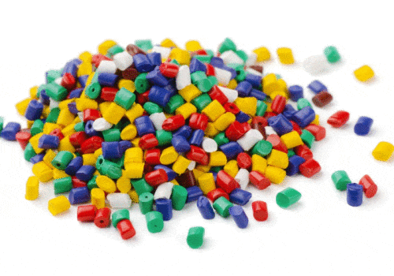

|
Le
bachelier en plasturgie est formé à travailler
sur des installations automatisées.
À
partir de poudres, de granulés, de liquides, de
pâtes, de films plastiques, de fibres, etc., il fabrique des
objets en plastique de formes variées.
Il
prépare son poste de travail, monte et démonte
les outillages et les règle : température, dosage
de colorant, cadence.
En
s'appuyant sur un cahier des charges, il prévoit la
matière d'oeuvre, les étapes de production et
conduit la fabrication.
Il
contrôle le fonctionnement des machines, vérifie
la qualité de la production et intervient en cas de
problème.
L'industrie
du plastique, en constante évolution, réserve
partout de nombreux débouchés : dans l'emballage,
le bâtiment, l'automobile,
l'électricité, l'électronique, le
médical
Le
technicien est embauché comme régleur sur presse.
Il peut travailler chez un producteur de matières de base :
granulés, poudre, résines ou chez un
transformateur : automobile, aéronautique, constructions
navales, ferroviaires, armement, électroménager,
articles de sport, emballage. (ONISEP)
|
|
 |